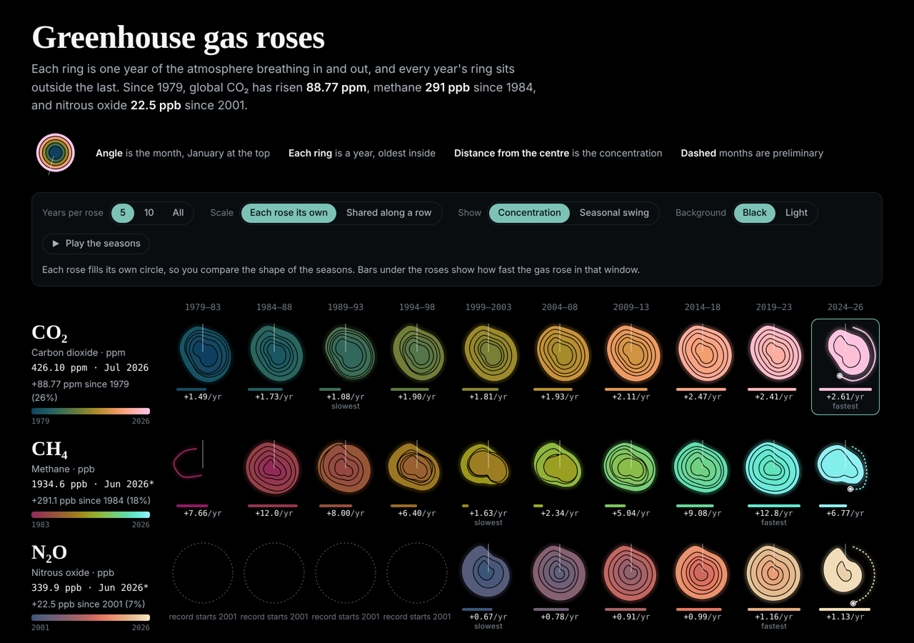

Greenhouse gas roses
Carbon dioxide, methane and nitrous oxide as rose small multiples you can rescale, hover and open, with NOAA's uncertainty, smooth growth curves, the warming effect of each gas, and a short written guide to where the air was caught and where it is heading.
Open the dashboard →